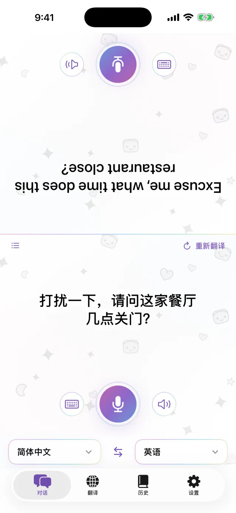
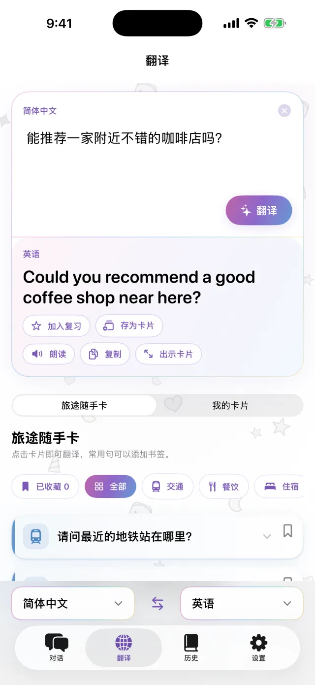
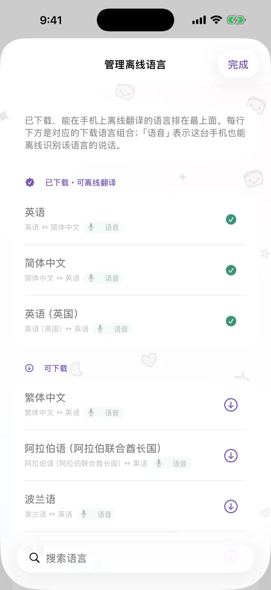
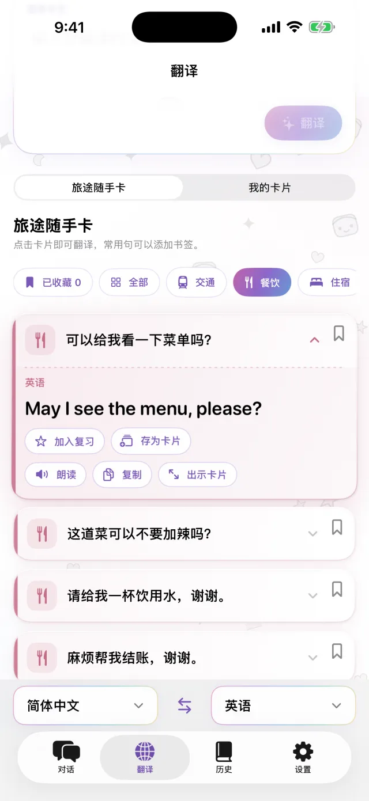
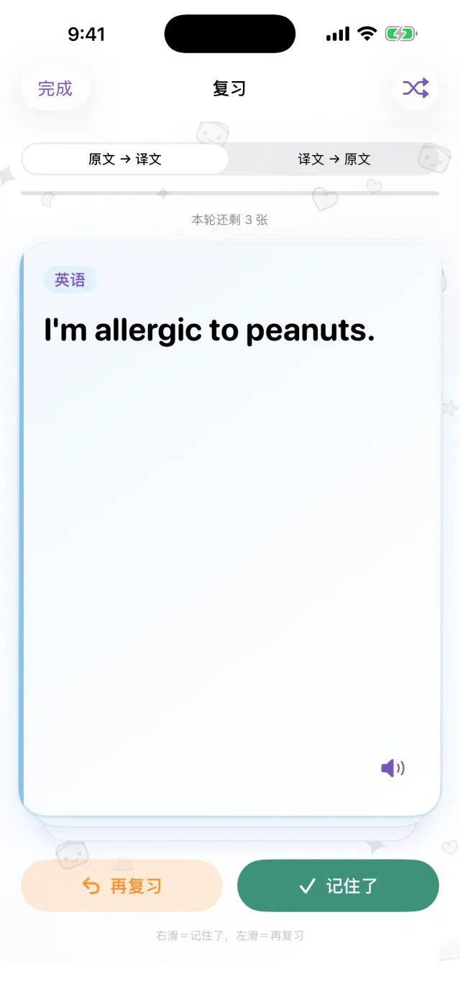

iPhone 翻译 App
iPhone 翻译 App
手机放中间，
面对面翻译。
点一下麦克风说话，译文会显示在屏幕另一半，朝向对方。对方回答时也是一样。先下载好语言，没有网络也能使用。
即将登陆 App Store- 约 20 种语言
- 下载后可离线使用
- 无需注册

打字输入
不方便出声时，直接打字
在安静的地方，或者对方说得太快时，可以直接打字。译文能放大到整个屏幕，举给对方看。
- 可以复制，也可以朗读
- 一键对调两种语言

离线
没有网络也能翻译
翻译、语音识别和朗读都在 iPhone 上完成。出发前先下载需要的语言，在飞机上，或者还没买到当地 SIM 卡时，也能使用。你说的话不会发送到服务器，录音也不会保存。

常用句卡片
每次都要说的话，存成卡片
酒店地址、食物过敏、要找的车站，存成卡片就不用再重复输入。点一下卡片，就会翻译成对方的语言。交通、用餐、住宿、购物的现成卡片也已内置。

Pro
存下的句子，到期再复习
点句子上的星标，就能存入复习。记住了，会在 1、3、7、14、30 天后再次出现。没记住的，当天会再出现一次。可以看原文想译文，也可以反过来。这部分是 Pro 功能。

这些时候用得上
- 在小餐馆点菜
- 告诉出租车司机地址
- 在药店说明过敏情况
- 把行李寄存在酒店前台
- 问路
30 秒了解
视频里已开启飞行模式。
基本信息
| 语言 | 约 20 种（Apple 支持在设备上翻译的语言） |
|---|---|
| 离线 | 支持，需先下载语言 |
| 语音输入 | 支持，部分语言仅支持打字 |
| 账户 | 无需账户 |
| 价格 | 免费。Pro 需另外付费（见下方） |
| 系统要求 | iPhone，iOS 18 或更高版本 |
- 第一次使用时需要联网下载语言。
- 价格会在 App Store 中以当地货币显示。
免费版与 Pro
免费
- 面对面对话
- 打字输入与全屏显示
- 离线翻译
- 旅途随手卡和 3 张自建卡片
- 有小型横幅广告
Pro
- 无广告
- 卡片数量不限
- 翻译历史与到期复习
可选按周、按月，或一次性买断。